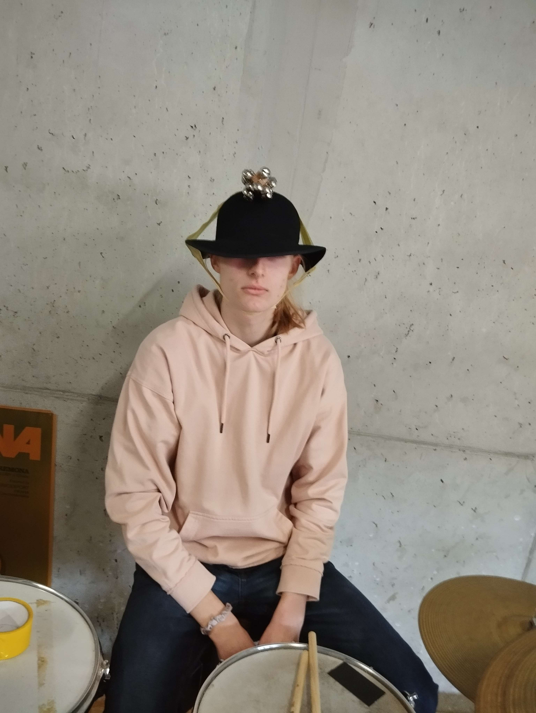
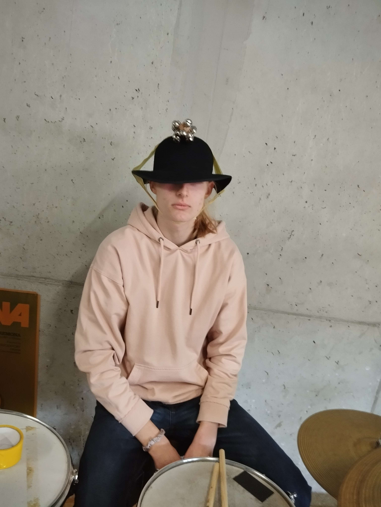

Wer bin ich
Mein Name ist Dávid Mrúz, ich bin 16 Jahre alt, und wie viele von euch wahrscheinlich schon wissen (weil immer jemand etwas dazu zu sagen hat), wohne ich in Radatice.
Meine wundervolle Persönlichkeit
Das war wahrscheinlich der schwierigste Teil beim Erstellen dieser Seite. Vielleicht, weil ich nicht gerne über mich selbst spreche, da ich das Gefühl habe, dass es nicht viel über mich zu sagen gibt. Jedenfalls, von den Dingen, die ich sagen kann, ist zum Beispiel, dass ich versuche, die Dinge so zu nehmen, wie sie kommen, und mich nicht von unnötigem Zeug stören zu lassen - und ich bin auch für jeden Unsinn zu haben. Eine weitere erwähnenswerte Eigenschaft, die je nach Situation gut oder auch nicht so gut sein kann, ist, dass ich versuche, Dinge, die mich interessieren, bis ins kleinste Detail zu perfektionieren. Andererseits, wenn mich etwas nicht wirklich interessiert, verschwende ich keine Zeit damit. Was meine Beziehung zu anderen Menschen betrifft, genieße ich Gesellschaft, brauche aber manchmal auch Zeit für mich selbst, um meine soziale Batterie aufzuladen. Außerdem denke ich, dass ich mich sehr gut an neues Wissen und neue Erfahrungen anpassen kann, logische Zusammenhänge erkenne und ein gutes räumliches Vorstellungsvermögen habe. Ich hoffe, dass mir diese Fähigkeiten in meiner Zukunft helfen werden, die ich im Abschnitt über meine Interessen etwas näher beschrieben habe.
 
